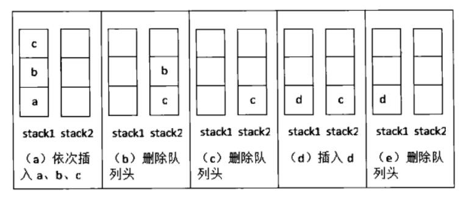

1.题目
用两个栈来实现一个队列，完成队列的Push和Pop操作。 队列中的元素为int类型。
2.思路分析
栈的特点是“先进后出”，即最先被压入（push）的元素会被最后一个弹出（pop）。
队列的特点是“先进先出”，即最先进入队列的元素会第一个出来。
两个数据结构的特点正好完全相反，那可以想到“负负得正”，创建两个栈，将第一个栈stack1中的元素放到第二个栈stack2中，使用两个“先进后出”栈实现一个先进先出的队列。总体的思路如下：
- 当stack2中不为空，在stack2的栈顶元素是最先进入队列的元素，此时可以弹出。
- 当stack2中为空时，再把stack1中的元素逐个弹出并压入stack2。
- 此时先进入队列的元素被压入stack1的栈底，经过弹出和压入操作之后就处于stack2的栈顶，可以直接弹出。若再有新的队列元素，直接将其压入stack1即可。
3.举例说明
通过一个具体的例子分析往该队列插入和删除元素的过程。首先插入一个元素a，先把它插入stack1，此时stack1中的元素有{a}，stack2为空。再压入两个元素b和c，还是插入到stack1中，此时stack1的元素有{a,b,c}，其中c位于栈顶，而stack2仍然是空的。
这时试着从队列中删除一个元素:
- 按照先入先出的规则，由于a比b、c先插入队列中，最先删除的元素应该是a。元素a存储在stack1中，但并不在栈顶，因此不能直接进行删除操作。
- 如果把stack1中的元素逐个弹出压入stack2，元素在stack2中的顺序正好和原来在stack1中的顺序相反。
- 因此经过3次弹出stack1和要入stack2操作之后，stack1为空，而stack2中的元素是{c,b,a}，这个时候就可以弹出stack2的栈顶a了。此时的stack1为空，而stack2的元素为{b,a}，其中b在栈顶。

4.代码实现
c++：1
2
3
4
5
6
7
8
9
10
11
12
13
14
15
16
17
18
19
20
21
22
23
24class Solution
{
public:
void push(int node) {
stack1.push(node);//新元素加入stack1中
}
int pop() {
if(stack2.empty()){//当stack2中的元素为空时，将stack1中的栈顶元素逐个弹出并压入stack2
while(stack1.size()>0){
int data = stack1.top();
stack1.pop();
stack2.push(data);
}
}
int pop_elem = stack2.top();//弹出元素为stack2的栈顶元素
stack2.pop();
return pop_elem;
}
private:
stack<int> stack1;
stack<int> stack2;
};
python2.7:
对于python来讲，栈就是用list实现的。1
2
3
4
5
6
7
8
9
10
11
12
13class Solution:
def __init__(self):
self.stack1 = []
self.stack2 = []
def push(self, node):
# write code here
self.stack1.append(node)
def pop(self):
# return xx
if len(self.stack2) == 0:
while self.stack1:
self.stack2.append(self.stack1.pop())
return self.stack2.pop()